4. Architectural Solution Part 2: Services and Subsystems
© The Author(s), under exclusive license to APress Media, LLC, part of Springer Nature 2024
V. DolzhenkoAlgorithmic Trading Systems and Strategies: A New Approachhttps://doi.org/10.1007/979-8-8688-0357-4_4
4. Architectural Solution Part 2: Services and Subsystems
Viktoria Dolzhenko1
(1)
San Jose, Costa Rica
In the previous chapter, we described the logic of our system and compiled a list of requirements and entities. That is, we decided on what our system should do, and in this chapter we will talk about how it will do it. The goal of this chapter is to list the services and describe their functionality and dependencies.
I propose the following plan:
-
We decide on the architecture. Before compiling a list of services, you need to decide what they will look like. Will it be one large application that can do everything or many small, conditionally independent services?
-
We identify a list of subsystems. Any complex problem is easier and better solved by decomposing a large problem into smaller ones. This approach also works great when creating a system architecture. The first step is to identify a list of subsystems and a list of their functionality and dependencies.
-
We identify a list of services. A subsystem is only an enlarged representation of the system. It does not contain information about the list of applications or their external contracts. That is, each subsystem must be divided into a list of services.
-
We will create a short description for each service. You will get a detailed description of services in the following chapters. Here I want to focus only on describing the functionality, defining dependencies, and describing the general logic of work.
Microservice Architecture
To begin with, I will talk about ways to build systems (Figure 4-1). Figure 4-1 shows two types of application architecture.
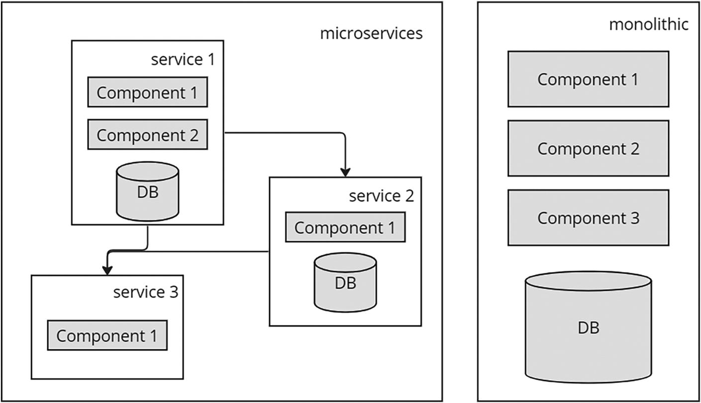
The architecture of microservices is monolithic. Microservices involve the data flow of three services with components and databases. Monolithic involves three components and a database.
Figure 4-1
Two common methods: microsevices and monoliths
There are two common methods.
-
A monolithic architecture is an architectural style based on one large application that is responsible for all the functionality of the system.
-
Microservice application architecture is a design approach centered around the concept of microservices, which are small, independent, and loosely coupled software components. These microservices are self-contained and focused on specific business functionalities, making them highly modular and scalable.
While individual microservices may not address user problems in isolation, they play a crucial role in collectively delivering complex functionalities within a larger system.
Some time ago, all systems were monolithic; this was primarily due to the lack of developed application life-cycle management mechanisms. Over time, these mechanisms have improved and become so simple that now almost all new systems are built on a microservice architecture.
Microservices have the following advantages:
-
Independence. This is perhaps one of the main advantages of microservices. Each microservice can be updated independently of other services. First, this allows you to release releases more often, and second, you can localize errors faster.
This is a very critical moment for our system. For example, if we talk about our system, it is unacceptable that the release of a new version of some component related to the search for profitable strategies will affect or even destroy the functionality of the real trading block.
-
Scaling. Imagine that the number of users in the system has increased, but all of them use only one function of your application. If you used a monolithic architecture, then you would have to scale not only the services that implement the desired functionality but also all other services, and this is a waste of a lot of resources. This is also an important advantage for our system. It allows us to independently scale the obviously necessary blocks for finding strategies and real trading. Perhaps at first, only after the system has started, it makes sense to direct most of the resources to the search and optimization block, because a small number of profitable strategies will participate in real trading.
-
Contextual constraint. Each microservice has its own strictly limited list of implemented functionality, which the microservice should not go beyond. This helps avoid tightly coupled services. Each service is essentially a separate program, with its own source code and interfaces. Thanks to this, you physically cannot use the internal classes of one service in the code of another service. All you have at your disposal are their interfaces; you don’t need to know about the internal features.
-
Distributed architecture. This has a valuable quality: your microservices can be deployed on different servers. For example, I use a cluster of several home computers to search and optimize strategies, and for real trading I rent servers because they guarantee uninterrupted operation. This approach allows me to save money, since home computers are cheaper and the requirement for uninterrupted operation is not so high.
Microservice architecture also has its disadvantages. The main one is the increasing complexity of system development. If in a monolithic architecture everything is synchronous and consistent, then in a microservices architecture this is not the case. It is necessary to start thinking asynchronously and about events. But this drawback for me was easily offset by the possibility of independent scaling and updating. For me, it is critically important to be able to quickly change the code of the components responsible for the search strategy and at the same time not break the strategies that work in real trading. It was also important that I could conduct testing on relatively cheap equipment at home and rent servers only for real trading. Then, to be honest, at first my real trading system worked on a separate computer at home. It was cheap, and I was also sure that if something went completely wrong, I could simply turn off the power to the computer.
Before we go any further, I would like to cover a few important concepts related to microservices so that there is no misunderstanding.
-
A subsystem is a set of services related in meaning. For example, within our system I see two main large subsystems: the strategy search subsystem and the real trading subsystem.
-
A service is what is called a microservice in a microservice architecture. This is an independent unit that serves one purpose and provides limited functionality.
-
The application is what makes up the components of the service. Usually there are no more than two. One of them provides API functionality, and the other is responsible for executing possibly lengthy and resource-intensive asynchronous background tasks, such as periodically receiving or updating data from other systems or periodically taking a long time to calculate something.
-
A library is a collection of software functions or classes intended for use in different applications. For example, it makes sense to use the same library for logging, rather than writing your own for each service.
Kubernetes
In this section, I’ll talk about an important topic: Kubernetes. I’ll tell you more about how to install it on a server, manage it, and deliver your applications to it in Chapter 9. But in this chapter I will cover a few important concepts so you can better understand some of my architectural decisions.
In the past few decades, a large number of approaches to software development have accumulated in the software field. Dozens of programming languages have become popular, each of which has its own compilation and execution mechanism. This means that in addition to the complexity of writing a program, there is also the complexity of running it on the server, because the system administrator has to understand the intricacies of how programs work in a particular language. Adding to this complexity is the different dependencies between applications. Often your program cannot run without other pre-installed applications. Sometimes when you create a service, it will fine on your personal computer, but when it is deployed to another server for testing, something goes wrong. It might be that your application requires one version of a pre-installed helper application, and the server has another installed. This problem was solved with the arrival of containers.
A container is a standardized and portable package that includes everything you need to run your application. This allows you to separate your application from the infrastructure, which includes the operating system and pre-installed applications.
It doesn’t matter what environment your application will run in, what language it is written in, and what dependencies it has. The developer just needs to create a program and pack it into a container, and the administrator can work with the container, which is ready to run. Of course, you can launch it manually. If the developers have released a new version of the application, you will also have to update the entire system manually. You must not forget about the uninterrupted operation of the system, which means you first need to launch a new version, transfer the load to the environment with the new version, and only then stop the application on the old environment. Figure 4-2 shows how this process looks schematically.
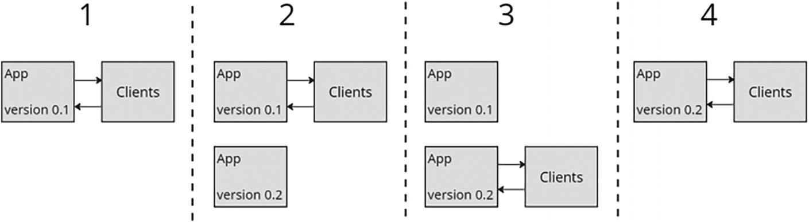
An illustration depicts four interactions. 1. The application version 0.1 and the clients. 2. The application version 0.1 and the clients with application version 0.2. 3. The application version 0.2 and the clients with app version 0.1. 4. Application version 0.2 and the clients.
Figure 4-2
Application update process
There is a high chance of error in this entire procedure, which can be solved with orchestrators.
An orchestrator is a system that helps manage the launch and operation of containers. The most popular of them is Kubernetes. The orchestrator not only provides the functionality to deploy your containers but also allows you to easily scale, update, and monitor the performance of your entire system. In this chapter, it is important for me to tell you about scaling. One of the central concepts of Kubernetes is the pod. This is the basic building block of this orchestrator, and it is also the only object in Kubernetes that causes the container to run. Roughly speaking, a pod is a small computer on which your application runs. Kubernetes allows you to create multiple pods for one application. It is this feature that provides the ability to horizontally scale your system. Since one application can have several pods, it is important when designing an application to remember that any of your applications may not be launched in a single copy. For example, if your application processes theories, it is important when designing it to consider that two different pods could start working in parallel on the same theory, which could lead to data corruption.
Now that you have the minimum knowledge required to design a system built on a microservices architecture, let’s get started.
Subsystems
Let’s first determine the list of subsystems and their functionality. I see only two subsystems in our system. This is a subsystem for searching for profitable strategies and a subsystem for real trading. We talked about them a lot in the previous chapter; I see no reason to complicate our system at the current design stage.
The task of the search subsystem is to find a profitable strategy and report this to the real trading subsystem. The real trading subsystem must start trading based on the found strategy and pass the strategy indicators to the search subsystem to optimize the strategy. As a result, the enlarged diagram of our system will look like Figure 4-3.
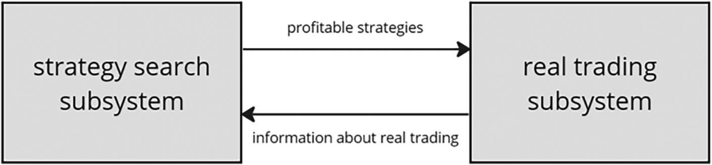
A block diagram illustrates the profitable strategies and information about real trading between the strategy search subsystem and the real trading subsystem.
Figure 4-3
Subsystem interaction diagram
Strategy Search Subsystem
The purpose of the subsystem is to search for profitable strategies. Let me remind you that for this the user themselves or with the help of a generator must generate theories. This means that the search subsystem must provide the user with an interface that allows this to be done. This entails the creation of a separate front-end service.
Whenever it comes to users, it is very important to raise the issue of roles. What are the user roles in the system? How are these users authorized? Is there a need to store user actions? I decided not to add this functionality to my system. The main reason is that most likely the system will be used by a limited circle of people with the same full rights. I prefer to focus on the strategy search functionality and can add an authorization system and normal accounting of user actions later if necessary.
Since our system will not have users as entities, there is no need for a single API service to provide uniform functionality to the front end. It will be redundant and turn into a simple and nonfunctional layer. Therefore, at the current stage, the subsystem will look like diagram 2 in Figure 4-4.
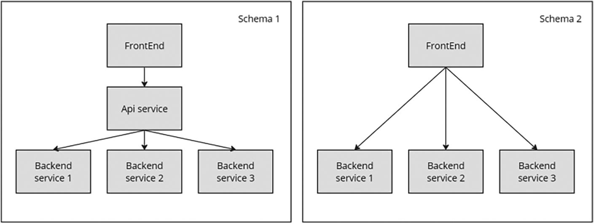
Two flow maps. Schema 1. Front end to backend services through A P I Services. Schema 2. Front end to backend services.
Figure 4-4
Options for interaction with the front end
Processing Generators
Let’s go in order. The user, using our front-end service, should be able to control the generator to generate theories. So, the user went to the generator settings page, filled out the required fields, and clicked the generate button. The front end sends a request to the back end for generation, and theories are generated. They can be generated synchronously, when the user waits until the system generates all the theories, or asynchronously, when the user is notified that the process has started, and the result can be viewed in a special tab or in the same window.
I chose the asynchronous option for a number of reasons.
-
Generating theories may take some time because there may be many of them. It’s not a good idea to make the user wait all this time.
-
It is not clear what to do if an error occurs during the generation process, when some of the theories have already been generated. Should I delete the old ones? Also, how do I understand which of them relate specifically to this request? It turns out that in the case of an error, the user will wait not only for the theories to be generated but also for them to be deleted.
-
How will the user know the result if the session is suddenly interrupted such as when the Internet goes off?
Since the generation of theories will be asynchronous, it is necessary to somehow display information about the progress of the generator, as well as the generation status, on the front end. Since the generator has a state in the form of a status, it means it becomes an entity. That is, the user will be able to see a list of previously created generators with their statuses and settings.
There are several more arguments in favor of the generator as an entity.
-
The generator as an entity allows the user to fill in only part of the required fields, save their work, and return to it later.
-
The generator as an entity allows the user to create generators by copying. This means that if the user wants to change, for example, only the list of indicators, they will not have to enter the remaining fields again.
-
The user will be able to see a summary of the generated theories in one place because they will be linked to a specific generator.
As a result, I see the generator settings page as shown in Figure 4-5.
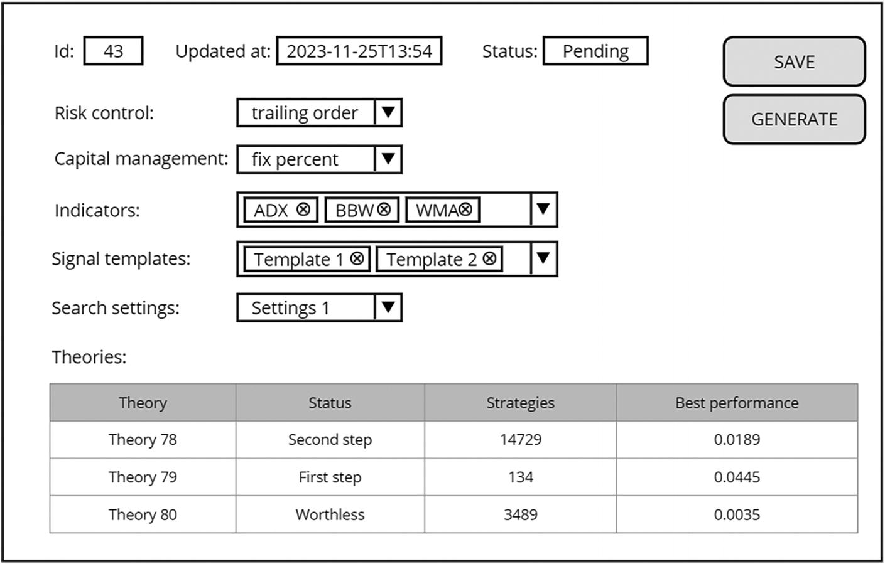
A chart reads the settings of I d, risk control, capital management, indicators, signal templates, search settings, and status with save and generate options. It lists the theories with status, strategies, and best performance.
Figure 4-5
Generator settings display option
Let’s move on. Here the user clicked the Generate button. The front end sent a signal to the back end to start generation. And we agreed that the generation of theories is an asynchronous process. This means the back end must somewhere note the fact that this generator needs to be processed and send a response to the front stating that the user’s request has been processed.
Of course, the program must change the status of the generator to waiting. In principle, this status can be used as a flag for the generator processing process, and then some background job will pick up this generator and begin processing it. By background job, I mean a special process that runs on a schedule, for example once a minute, and does a specific job.
This solution has one big drawback: the degradation of the search speed for active generators. This happens because the total number of generators will grow, which means that a request to search for generators in a certain status will work slower and slower. An alternative to working with statuses is working with a queue. You can put a generator in a queue, and background jobs will see it, process it, and remove it from the queue. This way, only active generators will be stored in the queue and it will not grow. There are several options for implementing queues, for example based on a database. Many cloud platforms have great queuing and processing solutions. There are also several mechanisms for managing queues; one of the most popular is Kafka. However, cloud solutions does not suit me, because I want my system to be independent of the cloud platform so I can deploy it on my home computer. I also think that using Kafka to solve this issue is too cumbersome, because you need to understand it and also be able to administer it.
To make a decision about how this process will be implemented, it is necessary to take into account that the theory generators will be created by the user, which means that there will be few of them, and the degradation will be insignificant. Therefore, I propose taking the simplest route.
When calling the back-end method, the waiting status is set, which will serve as a flag that the generator needs to be processed. Then some job should hire him. What this job will do is run periodically, check if there are generators for processing, and, if any, process them. At this stage, it is important to discuss whether these jobs will run in the same application as the API or whether it will be a separate application.
I believe that this should be a separate application, and there is one important reason for this. The process of generating theories can be lengthy and costly. During this time, the user should be able to continue working without interruption or slowdown in performance. If an application is busy generating theories, then it will not be able to process user requests with the same efficiency as before. In addition, this approach will allow these two applications to scale independently of each other. After all, we understand that the API App load will most likely be lower than on the Background Jobs App. Therefore, at this stage, the strategy search service looks like Figure 4-6.
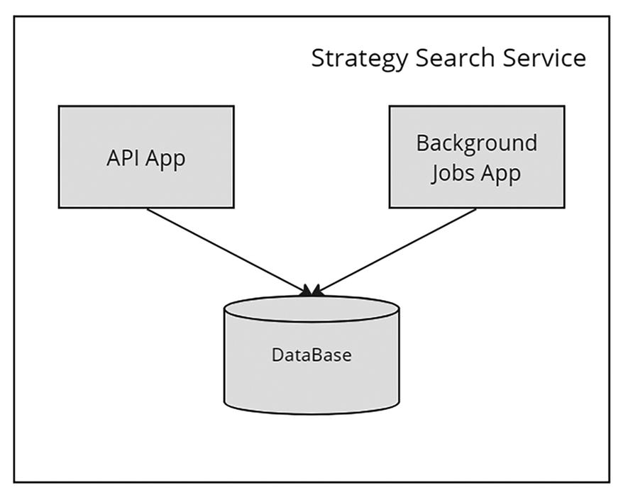
The flow diagram of the strategy search service. The A P I app and the background jobs app are combined and sent to the database.
Figure 4-6
Strategy Search Service application structure
As a result, the process of automatic theory generation will look like this:
-
The user enters the required data in the front-end service and clicks the Generate button.
-
The API App of the Strategy Search Service accepts a request from the front end and sets the generator to Waiting status in the database.
-
The Background Jobs App of the Strategy Search Service periodically queries the database table with generators, and if it finds a generator in the Waiting status, it begins to generate theories.
-
After generating theories, Background Jobs App sets the generator status to Done and starts looking for the next generator in the Waiting status.
Queue
We have decided how theories will be generated. But after generation, the system must take these theories to work. Each of these theories must go through the three steps described in the previous chapter, and if the first step is unsuccessful, the process of searching for strategies according to this theory must be stopped.
To process theories, you can, of course, use statuses as in the case of generators, but I don’t like this option because, unlike generators, there will be many theories, which means that the request to search for theories with the required status will degrade. There is also another problem that we will encounter: when two pods simultaneously take on the same theory. And this means only one thing: a queue is needed. I have already said that I do not want to use a queue built on the mechanisms of cloud platforms, since I do not want to tie my system to any solution provider, so we will build a queue at home.
I have several queue requirements.
-
It should be preserved even if the pod is stopped.
-
The ability to horizontally scale queue handlers is required.
There are several popular solutions for this task: RabitMQ, Kafka, or a Postgres-based queue.
I discard RabitMQ right away, since it does not guarantee message delivery, and for me this is an important point, because I do not want any of the theories to be processed.
Kafka is a great mechanism, but it requires quite a lot of server resources, so I will consider it as a growth point for my application. If it grows to such an extent that the Postgres-based mechanism becomes ineffective, then Kafka can be implemented.
The Postgres-based queue is perhaps not the most common solution, but it has one big advantage: it is cheap in terms of the resources required, and besides, our application will already use Postgres to store data.
So, our queue should provide the following functionality:
-
Only those entities that need to be processed should be in the queue. This means that after processing, it is necessary to remove the processed entity from the queue.
-
Ensure that entities are quickly added to the processing queue.
-
Ensure that parallel processing of one entity by two pods is prohibited.
Let’s immediately design the tables in the database that we will need to organize the queue. Of course, we will have a queue table with an entity_id column. It will contain entries with new theories. In order to prevent two pods from using the same theory, it is necessary to somehow mark the theories that are already being processed by the system.
Note
Table locking in a database is a mechanism that allows you to lock an entire table or its individual records, for example, for reading or writing for another database user. I’ll talk more about it in the next chapter, but for now the main thing to understand is that when a pod starts working on theories, it can lock a table or rows in it, and then a request from another pod will wait for the lock to end.
If we lock the queue table, then it will not be possible to add new records with theories to it. An additional table will help us get around this point, called active_queue, with an entity_id column. When the next pod wants to process the queue of theories, it will do the following:
-
Lock the active_queue table
-
Select an unoccupied theory, that is, a theory that is in the process_queue table and not in the active_queue table
-
Record that it is active in the active_queue table
-
Release the lock from active_queue
But what would you do if the pod started working on a theory and suddenly ceased to exist? How do other pods find out that no one is working with this theory anymore? To solve this problem, let’s add a timestamp column to the active_queue table. When the next pod starts working, it will take over the theory even from the active queue if more than a certain amount of time has passed from the timestamp, for example several minutes. As a result, the tables providing the queue will look like Figure 4-7.
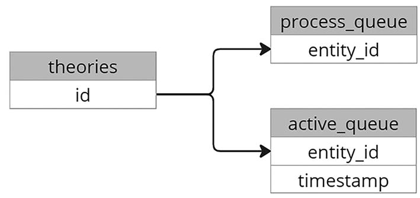
The stack flow depicts how the theory is split into a process queue and an active queue.
Figure 4-7
Database table schema
Let’s also solve the scaling issue. There will be tasks for processing the launch queue of the BackgroundJobs application, which have already been generating theories, or it is worth moving them into a separate application, or a service.
I don’t yet see any reason to move the theory processing process into a separate service, because this will add more work for us in the form of needing to transfer data about created theories to a new service. This is a large amount of data, and we will also have to solve the problem of transferring information about created indicators and methods and money management between the two services and ensure their consistency. Yes, perhaps our service is becoming like some kind of hybrid between a monolith and a microservice, but I am trying to strike a balance between the ability to quickly scale the system and the complexity of its development. If a team of developers, or even several teams, were working on it, then of course it would make sense to move work with theories into a separate service. But since I work alone and a temporary stop in processing the queue of active theories in the event of an unsuccessful update of the BackgroundJobs application is not critical for me, I believe that there is no need for a new service.
I propose solving the issue with easy horizontal scaling by increasing the number of applications for this service. Now there will be three of them with one common database, where the Theory Processing App will process the queue and guide the theories in three steps (see Figure 4-8).
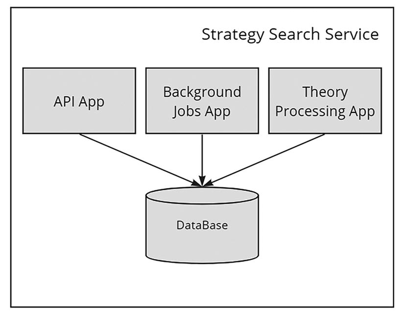
The flow diagram of the strategy search service. The A P I app, the background jobs app, and the theory processing app are combined and sent to the database.
Figure 4-8
Structure of Strategy Search Service with three applications
Finite State Machine
We came up with a horizontally scalable solution for theory processing. But what will this processing look like? A simple movement from status to status does not suit us, if only because after the first step we can either recognize the theory as unsuitable or move on to the second step, which means that the process of processing the theory has branches. And when you are faced with the task of moving some entity through a business process, with branches, it makes sense to think about implementing a state machine. A state machine is one of the ways to process an entity according to a business process. The idea of a state machine or finite state machine is that your entity can be in only one state at any given time. The number of these states is finite, and the state machine also contains rules for transitions between states.
Transitions between states occur under the influence of external signals. For example, transitioning the state “Processing the first step” to “Checking the suitability of the theory” means calculating all strategies that were generated using the optimization algorithm. Figure 4-9 shows a simplified diagram of the movement of the theory through states.
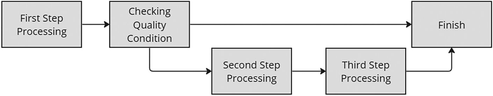
A flow diagram depicts how the first step processes the quality condition. The checked data undergoes second- and third step processing and is then finished.
Figure 4-9
Enlarged theory processing process
Concept of Theory Processing Steps
At this stage, we decided how the theory would move through the process. Let’s discuss how this process will occur. In the previous chapter we found out that the processing of the theory will be carried out in three steps.
-
The first step is a quick test of the theory. In this step, a subtheory is created with a limited number of parameter variations by increasing the step of values for each of them. After this, an optimization algorithm configured in breadth is launched. Thanks to this, strategies are generated and calculated. This process is iterative because the optimization algorithm creates a new set of strategy parameters based on the performance of the strategies created in the previous iteration. After the optimization algorithm is completed, the strategies are checked against quality conditions. If at least one strategy meets these conditions, then the theory is considered to be of quality.
-
If, as a result of the first step, the theory is recognized as qualitative, then the iterative creation of subtheories occurs with a decrease in the step of parameters and a narrowing of the range of their values. Next, all created strategies are checked for the second quality condition.
-
In the third step, the suitable strategies of the second step are calculated again, but using tools not used in the first and second steps. After that, they are checked for final quality status and sent to the real trading subsystem.
When I described all three steps, the first thing I thought of was creating step entities because they have a lot in common. They take input settings in the form of an optimization algorithm and financial instruments, and as an output you get a set of strategies. See Figure 4-10.
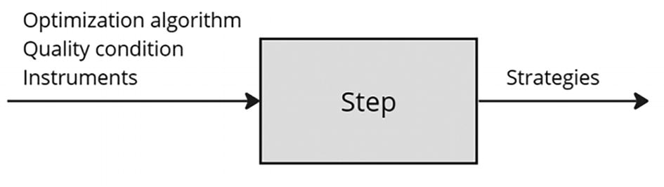
The step module intakes optimization algorithm, quality condition, and instruments, and gives the strategies.
Figure 4-10
Step entity
But when I thought about what should happen in each step, I abandoned this idea because all three steps are significantly different from each other. In the first step, only one subtheory is created. There is absolutely no logic in narrowing the range of values and iterative search for strategies. In the third step, there is no work with the optimization algorithm; in this step, only the calculation of already created strategies and their selection occurs. As a result, I came to the conclusion that I would not be able to delegate the authority to create subtheories to another entity to facilitate the logic of passage through the theory process.
As a result, it turned out that the theory moves through the process within the first step, as shown on the state machine state map in Figure 4-11.
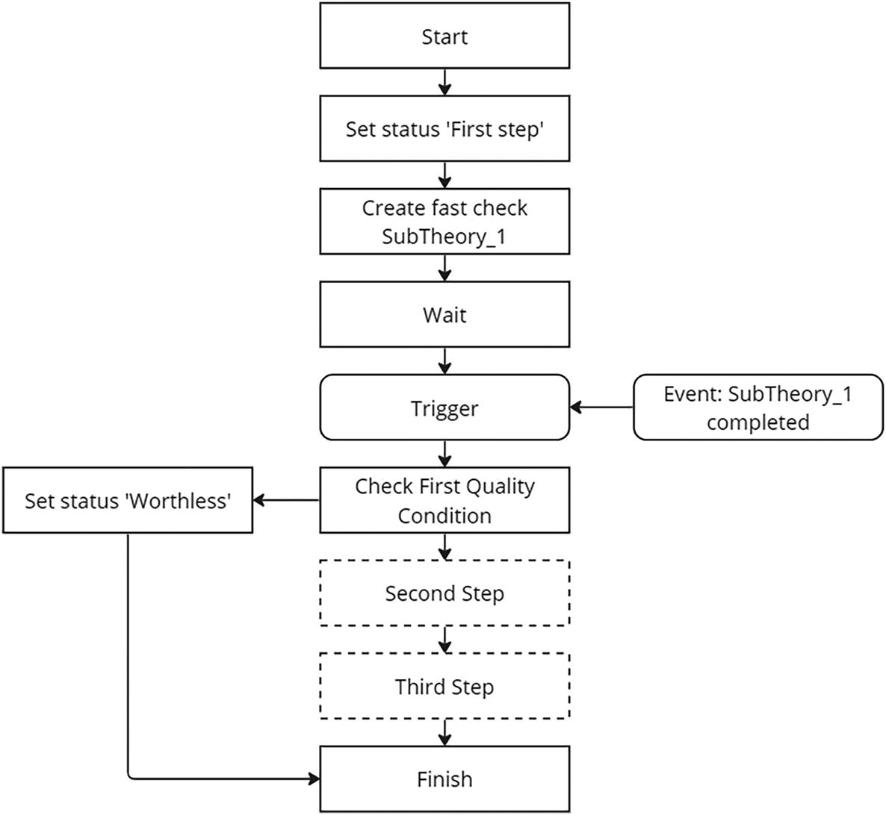
A flow chart defines the processes in the first step. It comprises creating a fast check sub theory, waiting, triggering, checking the first quality condition, second step, third step, and finishing by setting the status worthless.
Figure 4-11
Logic of the first step of the theory process
In this process, special attention should be paid to the event of completion of subtheory calculations. Calculating a subtheory is an iterative process that can take a long time, and I may even decide to outsource this work to a separate application or service, which is why, instead of taking the “Calculation of a subtheory” step, I chose a scheme with asynchronous calculation. This means that the theory will wait and do nothing until a signal arrives that the subtheory has been completely calculated. I would also like to point out that in this diagram, the status is just a marking that will be needed to show the user the progress of work on the theory, nothing more. That is, this status has absolutely no effect on the process.
Figure 4-12 shows the second step of the processing process.
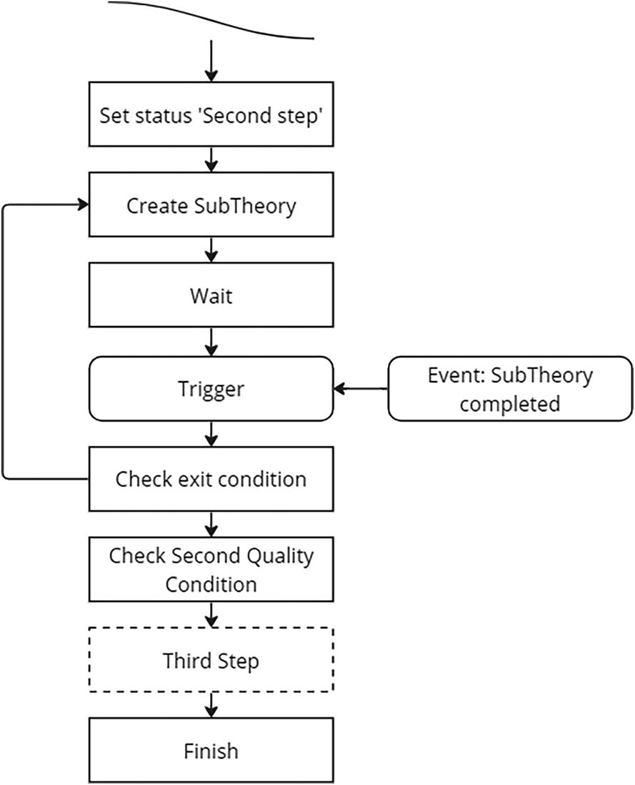
A flow chart defines the processes in the second step. It comprises creating a sub-theory, waiting, triggering, checking the exit condition, checking the second quality condition, the third step, and finishing.
Figure 4-12
Logic of the second step of the theory process
In this diagram, it is worth paying attention to the fact that subtheories are created iteratively. Let me remind you that the calculation of parameters for a new subtheory is based on the calculation results of the previous subtheory, but the very first system will be created based on the settings of the theory.
Figure 4-13 shows the third step of the processing process.
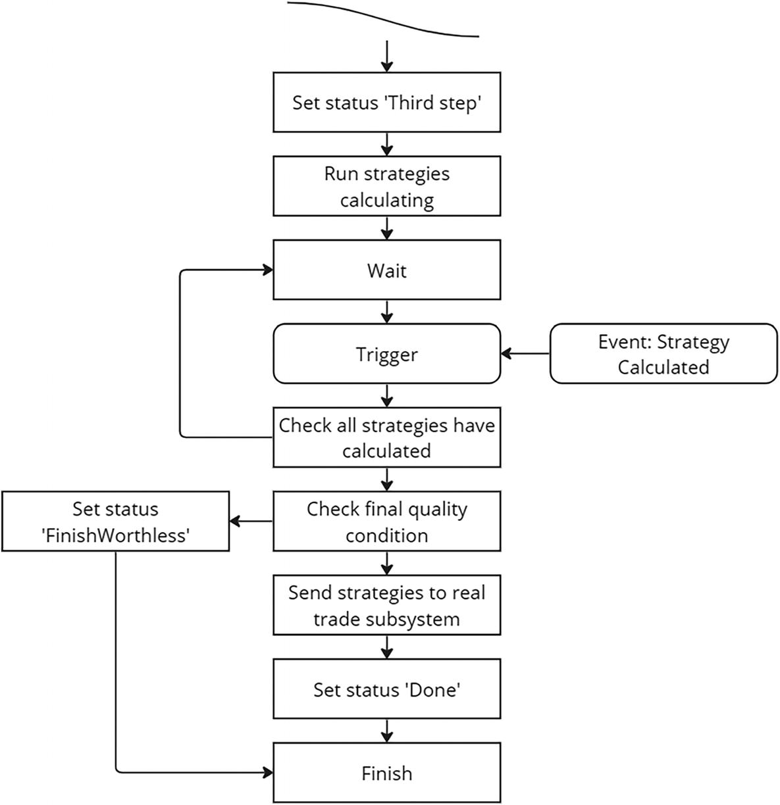
A flow chart defines the processes in the third step. It comprises running strategies, waiting, triggering, checking all strategies and final quality conditions, sending strategies to the real trade subsystem, setting the status as done, and finishing by setting the status as finish worthless.
Figure 4-13
Logic of the third step of the theory process
There are several things that are notable about this scheme.
The first of them is the asynchronous calculation of strategies. We’ll talk about this a little later, but I’ll say right away that it will be parallel and horizontally scalable. The theory can move to the next state only after calculating all strategies, which means we need to check the fact that all strategies have been calculated every time we complete the calculation of the next strategy. It is also important that our state machine be able to work with the parallel arrival of events. Imagine a situation where the two last strategies were calculated at the same time. When checking, the service will “see” that there is another uncalculated strategy and will not change the state of the theory. As a result, the theory will forever remain at the “Wait” step.
Please also note that if the final check fails, I set the status to FinishWorthless, not Worthless. This is done so that the user can see the difference between a worthless theory after the first quick test and after the final one. It is quite possible that they will use ideas from this theory when generating the next batch of theories.
Calculation of Subtheories
Let’s think about how the subtheory will work. Obviously, this has a certain process. At a minimum, it should have several statuses such as Created, In Progress, and Completed. The question is whether this process is complicated enough to start using a finite state machine. I see the subtheory process taking place as shown in Figure 4-14.
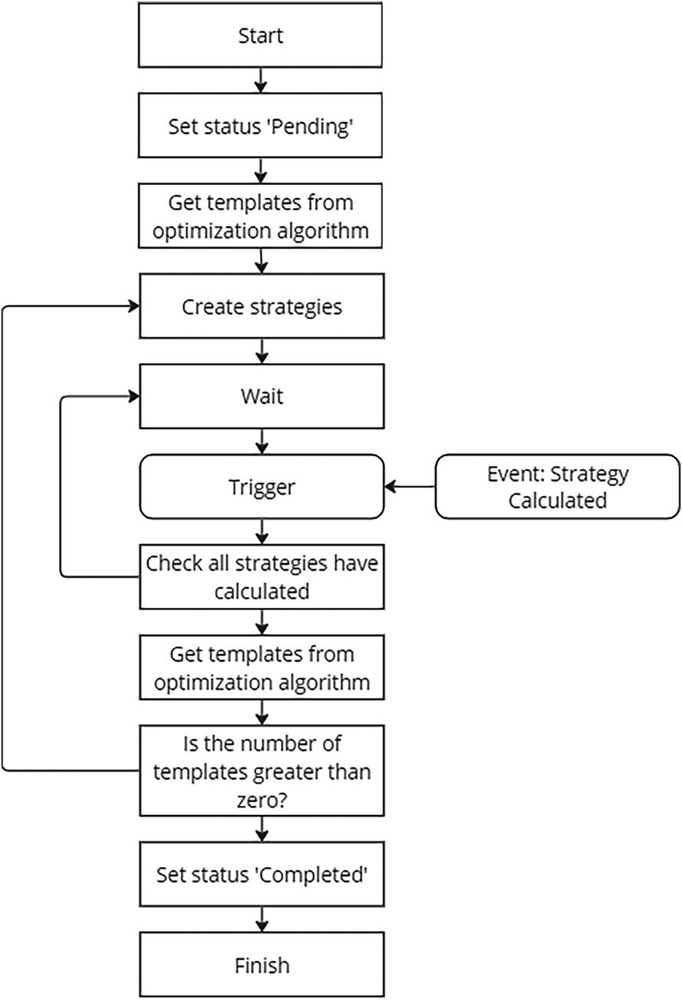
A flow chart defines the processes in sub-theory. It sets the status as pending, creates strategies, waits and triggers the event strategy, checks all strategies, checks the number of templates greater than 0, and sets the status as completed.
Figure 4-14
Subtheory processing
It’s easy to imagine what this process would look like using a finite state machine. The main thing to remember is that a subtheory must have a separate state map.
Process Review for Generators
So at this stage we already have two entities that use the state machine. And you know what I really don’t like at this stage in the system diagram? Generators have begun to deviate from the uniform pattern of entity processing. Even worse, the service will have a separate Background Jobs App exclusively for them. I suggest reconsidering this point.
Note
The fact that I periodically change my solution can be confusing, but let me remind you that creating an architectural solution is an iterative process. Revising architectural decisions is a normal phenomenon. It is better to reconsider your decisions now, before development begins, than to realize that something needs to be changed at a later time.
At this stage, the state map for the generators looks very simple (see Figure 4-15).
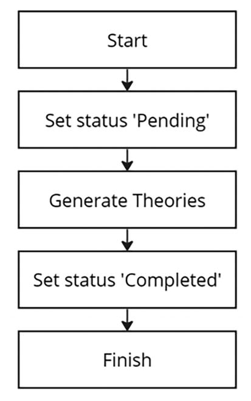
A flow chart defines the theory generation. It sets the status as pending, generates theories, sets the status as completed, and finishes.
Figure 4-15
State map for theory generation process
The process of generating theories is iterative. Still, it’s a slow process. Iteration will provide the user with the opportunity to interrupt the process of generating theories if the user understands that all the theories created in the previous iterations are worthless. Better yet, this check should be performed automatically, as shown in Figure 4-16.
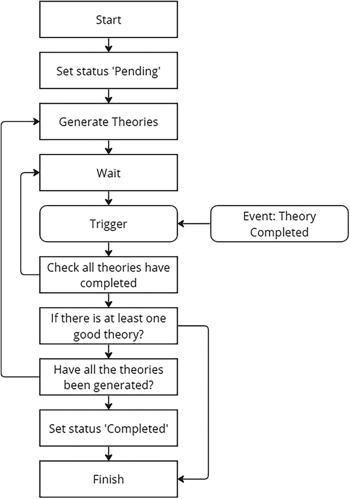
A flow chart of the improved state. It sets the status as pending, generates theories, waits and triggers the completed theories, checks whether there is at least one good theory, and sets the status as completed by generating all the theories.
Figure 4-16
Improved state map
There is another option for the theory generation scenario: to implement it using an optimization algorithm. Once we have indicators of the theory’s performance in the form of indicators of the effectiveness of its best strategies, then we can use this data to work with optimization algorithms. We will discuss this issue in more detail in Chapter 11.
Using a state machine to work with generators would be a proactive decision on our part. Although the requirements for the system did not explicitly indicate that the process of generating theories would be so complex, we will create a system that will make it quite easy to complicate this process.
That is, we will stop using Background Jobs to process generators and start using pods of the Theory Processing App for these purposes. This means that when the user clicks the Generate button, the API App will make a new entry in the processign_queue table.
Also, since the state machine will begin to process not only theories but also subtheories with generators, it makes sense to rename the Theory Processing App to the Processing App. I will talk in detail about the operation of my state machine in future chapters. Figure 4-17 shows the updated service diagram, without a separate application for background jobs.
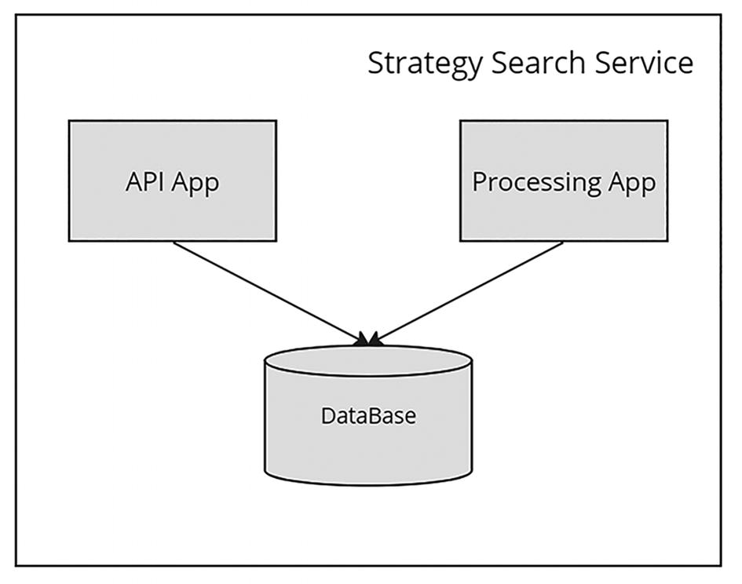
A flow diagram of the strategy search service. The A P I app and the processing app are combined under the database.
Figure 4-17
Final Strategy Search Service application structure
Optimization Algorithms
I would like to abstract the work with optimization algorithms into a separate module, which will have its own separate versions and which will not know anything about the fact that it works with strategies or subtheories. This is necessary to separate responsibilities between modules. Imagine that you want to make changes to the subtheory in such a way that the logic for generating variables for optimization algorithms will change. For example, you will add the ability to use not only indicator values in your signals but also their slope angles, or even switch to formulas instead of pure indicator values. If optimization algorithms are not abstracted and work directly with strategies, then you will have to change this block; otherwise, you will only need to change the class that is responsible for converting strategy data into a set of variables for the algorithm.
Moving optimization algorithms into a separate module provides another important advantage: you can test their work on much faster mathematical functions, such as the Kearfott or Rastigin function. I will discuss in detail how to test the optimization algorithm in Chapter 7. Now the main thing to understand is that complex optimization algorithms are not a constant, but a kind of constructor of methods and parameters. You can create an infinite number of variations of the genetic algorithm or other algorithms derived from it. Therefore, the functionality for quickly checking the operation of your algorithm is vital.
In Figure 4-18, I clearly demonstrated working with the future library of optimization algorithms.
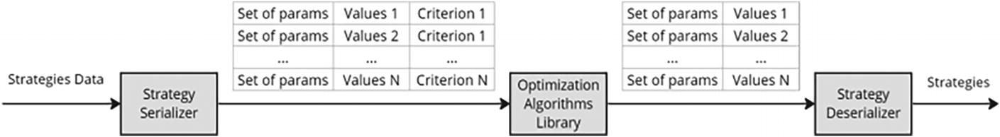
A flow diagram depicts the strategies data sent to the strategy serializer is processed via optimization algorithms library and received as strategies via strategy deserializer.
Figure 4-18
An example of using the optimization algorithms module
The fact that the user will have to independently create optimization algorithms based on some templates suggests that the optimization algorithm also becomes an entity.
Tasks
We have decided how strategies will be created. But how will they be calculated? To calculate a strategy, two components are required: the strategy itself and a certain period of historical data for the instrument.
I placed the historical data period into a simple entity called TestCandleInterval. This entity accumulates all the information necessary to obtain a set of candles.
Namely:
-
Exchange Id. It is no secret that the same instrument can be traded on several exchanges, which means its prices can be different.
-
Financial instrument Id.
-
StartDate. All candles with an opening date greater than this value will be included in the selection for TestCandleInterval.
-
StopDate. The second border is for the opening date of the candles.
In this book, I implement a relatively simple system. Therefore, the user will create the TestCandleInterval independently. But there is room for growth here. For example, you can create a TestCandleInterval while loading historical data. Remember in the previous chapter we talked about what tools should be used to launch a ready-made strategy. And one of the options was to separate them not by types of instruments but by types of charts. The new entity is perfect for both implementations because it contains a StartDate and a StopDate. This allows you to divide the historical data of one instrument into several test intervals.
In connection with the introduction of the new TestCandleInterval entity, it turns out that to calculate the strategy, only two components are needed: the strategy itself and TestCandleInterval. I combined these parameters into a separate entity and called it Task. It also makes sense to add a status to the task to understand whether it has been counted or is still being counted or maybe just waiting in queue for calculation. Tasks will not have a complex process. This is a small elementary unit that will have only four states with elementary logic for transitioning from each other: Created, Pending, Done, Error. There will be many tasks—hundreds of thousands. Putting them in the same queue as generators and theories is not a good idea. We will then lose flexibility in scaling the system. Therefore, I decided to put the tasks in a separate queue and even allocate a separate application for them.
This is how it will work:
-
The subtheory will generate tasks and place them in a queue.
-
A separate application with a large number of pods will take a task from the queue, mark it as active, and after calculation, remove it from the queue.
-
If the user decides that the theory is bad even before completing all the steps, then when the theory calculation is cancelled, their subtheories will be cancelled, and their tasks will simply be removed from the queue.
Figure 4-19 shows the task queue processing process. It can receive tasks from several sources. For example, the user can create a task through the front end and set it to be calculated via the API App. Or the Processing App, while working on a subtheory, will set tasks for calculation.
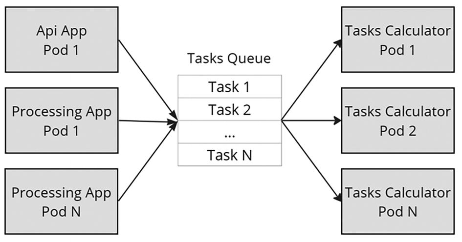
A flow diagram depicts how the A pi app and N number of processing app pods are sent via the task queue that comprises N number of tasks. It converts them into N number of tasks calculators.
Figure 4-19
Task queue processing process
It is extremely important that the calculation of tasks is as fast as possible. This process needs to be optimized down to the millisecond. At this point, I ran into a problem. I must have a mechanism by which I can verify that my system is working correctly. To do this, I needed not only the final indicators of the effectiveness of the strategy but also the intermediate results, such as the calculated values of the indicators on each of the candles, as well as all created positions with system orders and deals. I would like to take a separate task and see how the strategy behaved, when, and why it opened positions. Obviously, to implement this functionality, it is necessary to save data on the progress of the strategy into a database, and this is not a quick procedure. I also knew that the automated parts of the system did not need this data; the final results were enough for it. In connection with all of this, I added three calculation modes to the task:
-
With only the final information about the calculation saved. In this mode, the database will store information about the final results of the calculation, the minimum necessary for the operation of the automated parts of the system
-
With saving data on positions. In this mode, in addition to the final results, the database stores information about open positions with status history, with all orders and transactions
-
With saving indicator values. In this mode, not only all data from the previous two modes is saved, but also information about signal calculations, which includes the values of indicators and groups of conditions on each candle.
Core
In our entire scheme of dividing the system into two subsystems, I am confused by the fact that testing and verification of the trading strategy will take place in one subsystem, and the strategy will work in another. It is necessary to build the architecture in such a way that the system nodes responsible for making decisions about opening or closing positions, the logic of the system orders, and all the components of the strategy are common to the search and real trading subsystems.
This is reasonable, because we will test not only the strategies but also the code that implements them, which means this code should be the same. For this I created a separate library called Core. It is in Core that the logic of the strategy and all its components will be concentrated.
As input, Core will receive information about changes in the market, as well as signals about changes in the status of exchange orders, and as output, it will send signals about the need to place or close an order with a broker. See Figure 4-20.
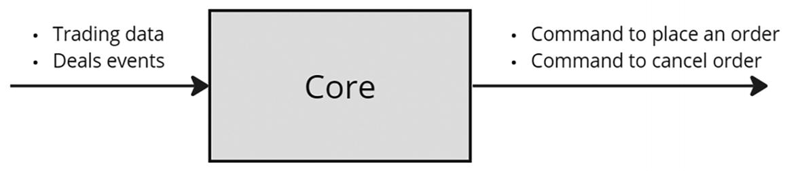
A block diagram of the top-level view of the core module. The core module intakes trading data, deals with events, and gives the commands to place an order and cancel an order.
Figure 4-20
Top-level view of the Core module
Obviously, Core will store entities such as Strategy, Signal, Instrument, and so on. This means it must contain all the necessary components to work with the database. I thought about separating Core into a separate microservice but quickly abandoned this idea, mainly because when calculating tasks, a lot of time would be spent on network interaction between the task calculation service and Core, and we cannot afford this.
I would also like to include in Core the functionality for calculating indicators of the effectiveness of the strategies; it would be strange if the real trading system calculated indicators using one formula while the search subsystem used another.
Sandbox Exchange
At this stage, we need to know what will process signals and how we will process them. This means we will need to create a small Sandbox Exchange module that will store orders, respond to signals for placing or cancelling an order, and make a decision about closing an order as candles arrive.
As a result, I see the big-picture process of calculating the task as follows:
-
We get candles by setting TestCandleInterval (all of it or in batches).
-
In a loop we go through all the candles, doing the following:
-
a.
We notify Sandbox Exchange about the appearance of new candles.
-
b.
We notify Core about the appearance of new candles.
-
Such a system does not ideally correspond to what will happen in real trading because Sandbox Exchange in our version does not know anything about the order book. This means it will not be able to correctly simulate order execution because it doesn’t know whether there were enough offers at that moment in time and at what prices they were offered.
But we still have no choice. There is no way we can wait several years until we collect the required amount of information, because it is almost impossible to find historical data with order books. Therefore, I will simply try to implement Sandbox Exchange as similar as possible to a real exchange.
Real Trading Subsystem
This subsystem has the following goals:
-
Ensuring smooth operation of profitable strategies
-
Ensuring the strategies work with the right types of financial instruments
-
Constant determination of the type of financial instruments
-
Providing the user with the ability to manage the trading process such as the ability to enable or disable a strategy
Again, since it’s an interface, a separate front-end service is needed. As in the case of the search subsystem, I propose we abandon the system of roles and solving issues of access levels, because at the beginning the system will have a limited list of trusted users with the same full rights to all actions in the system.
Integration with Exchanges
In a real trading system, there is a big problem that we have to face: the large amount of information coming from exchanges. Imagine that the candle update information for an instrument such as the Bitcoin-Dollar pair could be received via websockets from the exchange at least once every 50 ms. And we will have many such financial instruments.
First, it is necessary to separate the work with exchanges from other services of the subsystem into a separate service that provides a single interface. I don’t want other services to know anything about the internal implementation of integration with each of the exchanges. But is this enough? Imagine that you discovered a bug or decided to add integration with another exchange. If all the code for working with exchanges is located in one service, then when updating the code associated with one exchange, you will have to stop working with the others. This means that orders will not be placed and data on changes in candlesticks will not be received, which entails a loss of money. Therefore, it makes sense to make each of the adapters (the module responsible for converting specific information from the exchange into our single standard) a separate service.
Let’s imagine a scenario where a certain service of our subsystem wants to place an order with a broker. To do this, the service will have to take the URL of the required adapter, which is responsible for integration with a specific broker. It turns out that each back-end service that needs to use adapters will have to contain the logic for determining this URL. What happens if the broker switches to a new version of the API and we have to change the adapter interfaces? This is the first problem. The second problem is that somewhere we need to store a mapping between our instrument names and the broker names. This means that we will need a database. And what? We have to create a separate database for each broker? To solve these problems, we can create a proxy service, an exchange gateway. This will take on the functionality of knowing which of the adapters needs to be addressed, and it will also store name comparisons in its database and monitor the uniformity of adapter interfaces.
Figure 4-21 demonstrates both approaches.
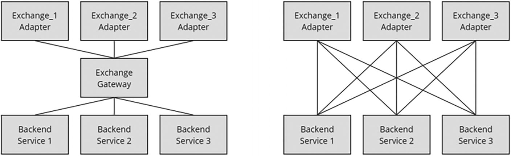
Two networks define how the exchange adapters access the backend services, with and without an exchange gateway.
Figure 4-21
Possible exchange gateway architectural solutions
Now let’s define the approximate functionality of the subsystem for working with exchanges. Since to work with exchanges it is necessary to create several services (and even this will be a relatively independent unit that can be used in other systems), I will separate it into a separate subsystem.
So, what functionality will be included in the subsystem for working with exchanges?
-
Ability to place orders using a common interface for all exchanges.
-
Possibility of order cancellation.
-
Providing information on updating order statuses and completing deals.
-
Providing trade data. In our case, this will only be data on updating candles, but in the future it can be expanded with information about changes in the order book.
Figure 4-22 shows what the first and second steps will look.
A flow diagram of four stages. Backend service, exchange gateway, exchange adapter, and exchange.
Figure 4-22
Sequence of service calls when creating an order
This looks bulky. Time will be wasted on networking, but I decided to compromise on this issue. I initially defined my system not as a system for scalping trading, since I understood that I most likely would not be able to compete with traders who rent their servers in close proximity to the exchange servers. I will purposefully look for strategies in which the average lifetime of open positions is measured in minutes or hours, not in seconds, and I believe it is worthwhile to compromise on ease of development and maintenance, at the expense of speed.
We have decided on placing and cancelling orders. Providing information about updating order statuses and trading data will be more difficult. Let’s imagine that the exchange sent a message about a candle change. How will the information reach consumers? And there will be several of them, because it is normal for several strategies to work with one financial instrument, and both strategies should receive the same information. So, the adapter will have to know about all the strategies that need this information. That doesn’t sound very good. In addition, the adapter may not have time to notify all information consumers before the arrival of a new message from the exchange.
I think there is only one solution that meets our needs to send messages to multiple consumers, even with high throughput: the use of message brokers. Message brokers were created to solve this problem. The source of information (in our case, the adapter) simply sends a message to the message broker, and that’s it. That’s where its work ends. It doesn’t know anything about the number of consumers or whether they exist at all. Its task is simply to send the message to the message broker, and this is very fast operation. Then the broker ensures the transfer of data to all information consumers. So, the most suitable solution for the system is a solution based on the Kafka message queue system because we need high throughput and Kafka is capable of passing up to millions of messages per second. Of course, like any queue built not on pushing messages but on reading them by consumers, this does not guarantee real-time delivery of messages, especially if the consumer takes a long time to process the messages. But our architecture is based on distributing the load between pods, which will provide the ability to scale the system.
Note
Kafka is a distributed message broker that works on a publisher-subscriber basis. Data in Kafka is represented as key-value pairs. Kafka guarantees that all messages will be ordered in the exact order in which they were received. Kafka stores read messages for a period of time.
The next question is, will the adapter itself send messages to the queue? Or will they also go through the exchange gateway? On the one hand, it makes sense for them to go through the exchange gateway; this way we will hide Kafka and leave working with it in one place. We also guarantee that Kafka topics will contain messages of the same type; that is, we will remove the problem when one adapter sends messages to the old version, and another to the new one.
On the other hand, the exchange gateway will become a bottleneck. If we need to update it or we find an error in it, it will affect information flows from all adapters.
As a result, I am more inclined to the second option, where we give the adapters some freedom and they themselves will write messages to the Kafka topic, because I am afraid that in the future there will be problems with the performance of the exchange gateway. Yes, perhaps here I am breaking the encapsulation of the adapters, and they are starting to know too much; however, I will provide a library for sending messages to the topic, common to all adapters.
As a result, Figure 4-23 shows the process of obtaining data from exchanges.
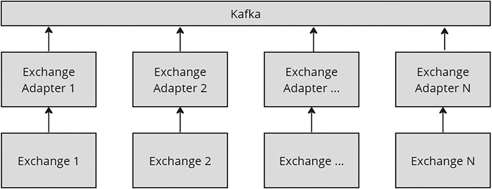
An architecture defines how the N number of exchanges are processed via N exchange adapters and sent to Kafka.
Figure 4-23
Adapter service architecture
Launch and Operation of Strategies
Let’s get back to discussing how strategies work. A new strategy has entered our subsystem and needs to be launched, or maybe it’s not a new strategy but simply a restart of the strategy after an update or failure. In any case, the startup process will look the same.
-
1.
Store frequently used information in RAM, such as strategy identifier, exchange and financial instrument identifier, minimum lot size, number of decimal places in the price, and so on. There is not a lot of this information, but the strategy will use it often.
-
1.
Correctly respond to messages about transactions that came from the exchange during downtime. If the strategy has not worked for a long time, then it may make sense to close all open positions.
-
1.
It needs to subscribe to the desired trading information topic. For each exchange-instrument pair, a separate topic will be created in Kafka so that strategies can receive information only on the financial instrument they need.
-
1.
After this, it needs to load historical trading data, because many indicators require information about previous candles to work correctly. This is especially important if we have to scale several indicators to the same scale.
-
1.
Only after this can we consider that the strategy has begun to work.
The strategy operation block must be isolated so that data on the operation of one strategy does not affect the operation of another. The question is how do we do this? At what level should this insulation be ensured? In software, when a certain instance of a class is conditionally created for each strategy (which ensures the operation of the strategy, when will there be a separate pod in Kubernetes for each strategy-instrument pair? Or maybe some kind of hybrid solution, when, according to some logic, the number of working strategies on one pod will be set?
On the one hand, the strategies will work both in weakly volatile markets and in highly volatile ones. If changes in trading information occur rarely, then it may make sense to have one pod ensure the operation of several such strategies. On the other hand, such a small unit as a pod may not have time to process frequently received signals from highly volatile markets for several strategies. Therefore, it is important to maintain a balance.
There is one more important detail: a weakly volatile market can at some point become highly volatile, and then what? Redistribute strategies between pods? Provide yourself with periodic downtime at work? I don’t like this option. I think that in this matter a good solution would be the logic of one pair of strategy/instrument and one pod. I also like this approach because we will know for sure that only one strategy works in this instance of the program, and we will certainly avoid trouble in the code associated with the influence of data from one strategy on another.
Enabling and Disabling Strategies
We have decided that each strategy will have a separate pod. But how will this work? Let’s imagine that information came from the strategy search subsystem with a list of strategies with the types of instruments on which they can work. Let’s first put them in the table with profitable strategies called profitable_strategies, where there will be two columns: strategy_id and instrument_type. But to launch a strategy, we need an instrument, not a type of it. It turns out that we need another instrument table where there is a type. At the start it will take an unoccupied strategy, so somehow we need to mark that it is already occupied and start working with it.
How will it understand that the strategy is not busy? It is possible, of course, for everyone to select a list of strategies from profitable_strategies, connect it with instruments, and then take an unused strategy-instrument pair to work. But what if we want to change this logic? For example, add an is_enabled checkbox for an instrument so that the user can independently enable or disable the instrument. Because the program code for determining working strategies will change, you will have to update it, which means you will have to restart the pods working with the strategies, which you would like to avoid. This means the logic for determining working strategies should be placed in a separate application with separate pods. That is, we will have one application (let’s call it tasks), which will determine which strategies are working, and another application (let’s call it worker), which launches these strategies and ensures their operation.
As a result, I see tables like these in the database, as shown in Figure 4-24.
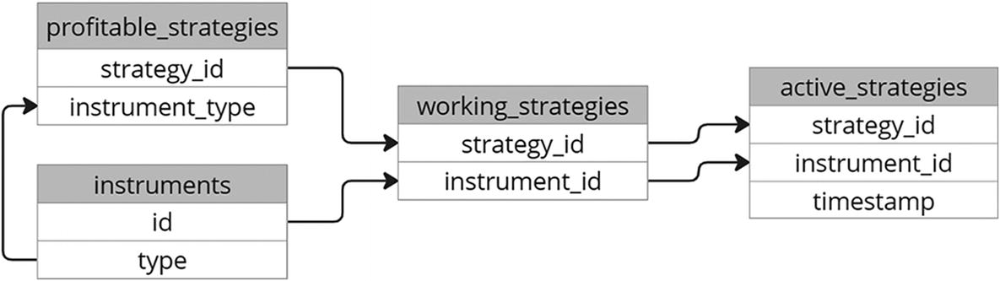
A stack flow diagram defines how the profitable strategies are mapped to working strategies and transformed into active strategies. The working strategies are additionally employed with instruments.
Figure 4-24
Relationship between database tables
This is how it will work:
-
1.
The strategy search subsystem notifies the real trading subsystem about the emergence of new profitable strategies. They are written to the profitable_strategies table.
-
1.
A special background job from the tasks application, which monitors the state of working strategies, “sees” that a new strategy has appeared that is not in the working_strategies table. It checks all required is_enabled conditions and makes an entry in working_strategies with the new strategy and the tools it can run on.
-
1.
A free pod, on which a separate application for working worker strategies is running, “sees” that an entry has appeared in working_strategies, which is not in active_strategies, and takes it to work.
If the opposite situation occurs, when for some reason the user turns off a financial instrument or the type of the instrument changes, or maybe the strategy itself is turned off, then the job will delete records from the working_strategies table, and the worker under that works with it will detect this during the next check. This will delete the entry from active_strategies and try to use the next free strategy.
There is one more important point to consider. There is a probability that a certain worker will suddenly cease to exist. What we get is that in active_strategies there is a record that the strategy-instrument pair is busy, but in fact it does not work. I solved this problem simply. Every time the worker pod checks the working strategies and nothing has changed, it updates the value in the timestamp column. If the date in this column lags behind the current one by a certain time interval, this will mean that the worker pod has stopped working with the strategy and it can be taken by another pod. At the current stage, I see the strategy service shown in Figure 4-25.
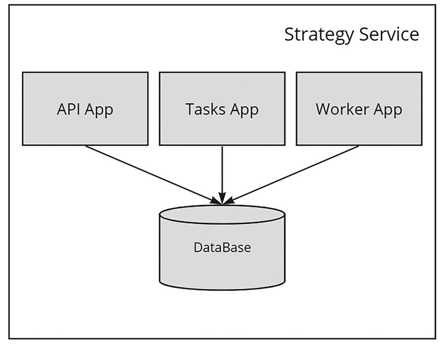
A block diagram of the strategy service module defines how the A PI app, tasks app, and worker app accesses the database.
Figure 4-25
Strategy Service structure
Checking the Type of Financial Instrument
In the previous chapter, I mentioned the importance of determining the type of financial instrument. The type of instrument or chart greatly influences the profitability of the strategy. Often, a profitable strategy becomes unprofitable if it works on the wrong instrument. Perhaps the simplest way to determine the type of instrument is to use the logic already inherent in the signal. I think using a signal is a great option for these reasons:
-
Often, determining the type of chart is based on indicator values. For example, a trend can be determined by analyzing the values of such indicators as Moving Average (MA), Moving Average Convergence Divergence (MACD), the Bollinger Band (BB), and Parabolic SAR. All conditions can be perfectly applied to the logic of the signal, and if the functionality is insufficient, it can be easily expanded by adding a specific indicator.
-
The very purpose of the Signal entity helps us in solving the problem of determining the type of instrument. After all, the purpose of the signal is to provide us with a yes/no answer. That is, it helps us figure out whether the financial instrument corresponds to the type or not.
-
This mechanism will already be implemented in the Core library, and we will not need to invent or create anything new.
It turns out that in the table with types of instruments, we will need a column with a signal, with the help of which the system will be able to determine the type of instrument in real time for the real trading subsystem and when loading historical data in the strategy search subsystem.
As is the case with ensuring the continuous operation of strategies, when determining the type of instrument, the system will need to analyze a large flow of trading data. Therefore, it makes sense, as in the case of strategy, to allocate its own pod for each instrument, which will be subscribed to the desired Kafka topic from which the trading data comes.
Why is that and not, for example, a pool of topics that process message queues? Well, to calculate most indicators, it is necessary to take into account candles in the previous n segments. And if the pod does not have this information in its memory, then it will have to be taken, for example, from a database or directly from the exchange, and these requests are quite slow.
As a result, the strategy service has a fourth application: Instruments App. At this stage, I am starting to worry about the number of tasks that the strategy service is responsible for.
-
API for the front end
-
Background tasks such as managing the working_strategies table
-
A separate application for ensuring the strategies work
-
Separate application for determining the type of financial instruments
It looks like the strategy service needs to be divided into three independent services, with separate databases and applications.
-
Strategy Service. This service will ensure the operation of strategies. It will have two applications: the API App for receiving a command to enable or disable a strategy-instrument pair and of course the Worker App, an application that will ensure the strategies work. It will have many pods, one for each strategy-instrument pair. I really like separating this logic into a separate service. It allows us to truly isolate the operation of strategies from other parts of the application.
-
Instruments Service. This service will determine the types of financial instruments. It will also have two applications: the API App for information about changes in the instruments and a Worker App to define instrument types. There will be one pod for each instrument.
-
Strategy Manager Service. Judging by the name, this service is a prime candidate for division into several smaller services because it will be responsible for solving several problems. However, since they are small, I don’t see the point of making it too complicated for now. So, this service will also have two applications. The API App will provide the front end with the necessary methods. This application will also receive information from the search subsystem about the emergence of new strategies. You also need an application to manage the working_strategies table; let’s call it the Tasks App.
As a result, at the current stage, the real trading subsystem looks like Figure 4-26.
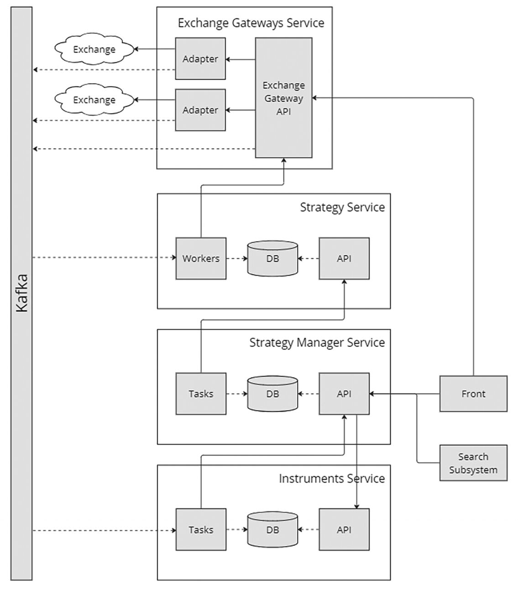
A data flow diagram of the real trading subsystem. It comprises instrument services, strategy manager services, strategy services, and exchange getaway services accessing a single Kafka bus via the front and search subsystems.
Figure 4-26
General architectural diagram of the trading system
Let’s look at several scenarios for the real trading subsystem.
Here is how new strategies arrive from the search subsystem:
-
1.
Some service from the strategy search subsystem makes an HTTP request to the API App of the Strategy Manager Service, sending it information about profitable strategies and types of instruments.
-
1.
The API App of the Strategy Manager Service records this information in the database without calculating anything.
-
1.
The Tasks App of the Strategy Manager Service “sees” that new strategies have appeared and sends an HTTP request to the API App of the Strategy Service with a signal about the need to take on new strategies.
-
1.
The API App of the Strategy Service writes to the database new working strategies.
-
1.
One of the free Workers App pods of the Strategy Service “sees” that a new, unactivated strategy has appeared and takes it to work.
Here is how the Workers App of the Strategy Service works:
-
1.
Every pod of the Workers App of the Strategy Service is subscribed to a specific Kafka topic, through which information about changes in candles for the financial instrument they need is broadcast. The Workers App responds to these changes, calculates signal values, and monitors the logic of system order execution. At some point, a signal to place an order with a broker may be triggered.
-
1.
The Workers App of the Strategy Service sends an HTTP request to the API App of the Exchange Gateway Service to place an order with the broker.
-
1.
The API App of the Exchange Gateway Service redirects the request to the desired Adapter App of the Exchange Gateway Service. The adapter places an order with the broker with which it is integrated.
-
1.
After some time, the Adapter App of the Exchange Gateway Service “learns” that the status of this order has changed. The way to obtain order statuses can be different; it all depends on the broker and its API. Maybe the adapter will periodically poll the broker about changes in information about orders, or maybe the broker provides a webSocket interface and itself will notify the adapter about these changes. It doesn’t matter. The important thing is that the adapter somehow learned that the order status had changed.
-
1.
The Adapter App sends messages about changes in order status to the desired Kafka topic.
-
1.
The Workers App of the Strategy Service is subscribed to the topic from the previous step. This means it receives this message, and it acts according to the logic embedded within it.
This is how the Instrument Service works:
-
1.
When creating a new financial instrument, the front end makes an HTTP request to the API App of the Strategy Manager Service, passing information about the new instrument to it.
-
1.
The API App of the Strategy Manager Service makes an HTTP request to the API App of the Instruments Service with a message about the availability of a new financial instrument.
-
1.
The API App of the Instruments Service writes information to the database.
-
1.
A free one pod of the Tasks App of the Instruments Service “sees” that a new free tool has appeared, takes it to work, and subscribes to the desired Kafka topic with information about changing candles.
-
1.
If the logic of changing the type of an instrument is triggered in the Tasks App of the Instruments Service, the application writes this information to the database and makes an HTTP request to the API App of the Strategy Manager Service with information about changing the type of the financial instrument.
-
1.
The Strategy Manager Service Tasks App “sees” that the type of financial instrument has changed and gives the necessary commands to the Strategy Service to enable or disable strategies.
Master Data
I have one big question about this scheme. Which service is a source of reference information? Here a new signal is created, no matter whether it came from the search subsystem or the user. Where will it be created, and how will other services know that a new signal or strategy has appeared? Based on Figure 4-26, the central system for storing this information will be the Strategy Manager Service. It turns out that this service will have another task of storing reference information. I think this is too much. Typically, for such purposes, a separate Master Data Service is used, which stores general information used, for example, a list of signals, strategies, instruments, exchanges, etc.
Also, taking into account the fact that we have such a system, it may already make sense to add an API Service to hide information from the front end about which service it turns to for certain data.
With the advent of the Master Data Service, the real trading subsystem diagram will look like Figure 4-27.
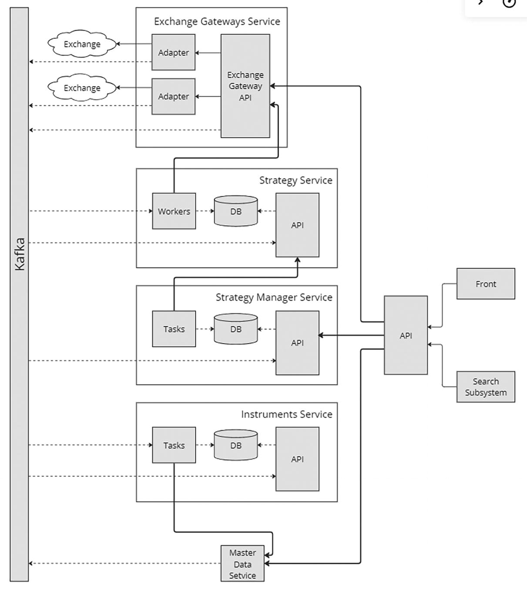
A data flow diagram of the trading subsystem. It comprises instrument services, strategy manager services, strategy services, and exchange getaway services accessing a single Kafka bus via an A P I that includes a front and search subsystem.
Figure 4-27
General architectural diagram of the trading system with Master Data Service
Figure 4-27 shows that all requests now go through the API Service, which decides which microservice to contact. The API Service will have only one application, which is the API App.
The script for creating reference information, such as a financial instrument, now looks like this:
-
1.
The front end makes an HTTP request to the API Service to create a new tool.
-
1.
The API Service makes an HTTP request to the Master Data Service.
-
1.
The Master Data Service saves the new financial instrument in the database and sends a message to Kafka indicating that a new instrument has appeared.
-
1.
All subscribers to this event will receive this message and save the information they need in their database.
Summary
This chapter did not describe everything that is necessary for a well-described architectural solution. In it, we only touched on tables in databases and did not touch upon signatures of API methods at all. Also, the functional diagrams were only superficially described. I plan to go deeper into these issues in future chapters dedicated to the subsystems.
In this chapter, I did the most important thing, which was to divide our system into independent parts, describe the tasks of each of them, and describe how they would solve them.
The scheme of the real trading subsystem turned out to be more complicated than the scheme of the strategy search subsystem, and it was also obvious that the architectures of these subsystems use different approaches. This is understandable, because in the strategy search subsystem, it was necessary to pay special attention to the speed of calculating strategies, which means that it is necessary to minimize interservice interaction and, as a consequence, the number of services. On the other hand, in the real trading subsystem, it was necessary to pay more attention to independence. I consider the fact that it is possible to independently update and scale in this subsystem to be very critical. Therefore, it has more independent services.
Now we understand what our system will look like and the parts it will consist of.